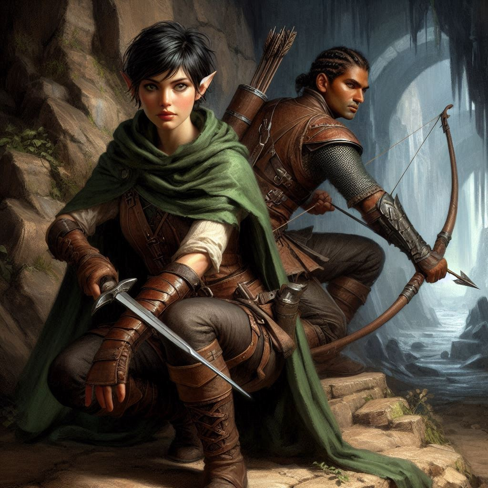
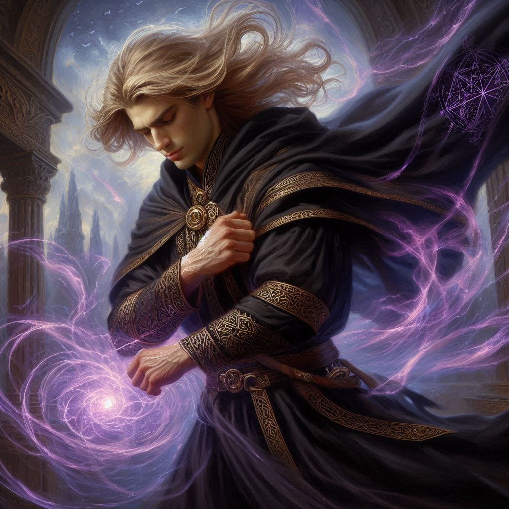

Jorsh's Revenge
You stand with your companions, hearts pounding, eyes locked on the scene unfolding below. Varis, the dark elf masquerading as the Minister of Trade, moves with slow, deliberate precision, chanting words of dark magic. The ancient portal looms before him like a yawning void, its surface rippling as if caught between worlds. His mercenaries stand vigilant, their swords glinting in the dim light, forming a protective ring around their master.
But your eyes drift past them, settling on a figure you never thought you’d see again—Jorsh, his hands crackling with dark energy, poised for attack. The years have changed him; his once kind eyes are hardened, his face sharper with the weight of vengeance. His focus is singular—Varis. And for a fleeting moment, you wonder: is he still the boy you once loved, or has the darkness consumed him completely?
“What’s the plan, Kira?” Elias whispers, his hand resting on his bow, ready to strike. His voice pulls you back to the present. Baider stands at your other side, grim determination etched on his orcish features. Liora and Hawthorn, weary but resolute, await your command. You glance at them, knowing the weight of your decision could mean the difference between victory and disaster.
You raise your hand, signaling the group to prepare. “We take Varis first,” you say, your voice firm, though inside, doubt churns like a storm. “We use the high ground. Hit him with arrows and magic before he can react.”
Baider nods, gripping his hammer tightly. “Good. We strike fast, we strike hard.”
Elias sets an arrow to his bowstring, his expression steeled. “I’ll draw their attention. Liora, can you amplify the force?”
Liora, though weakened, gives a resolute nod, hands already glowing with the faint shimmer of magic. “I’ll bolster the arrows. We need to break through their defenses before they realize what’s happening.”
With a shared look, your team moves into position. The moment is tense, and your pulse quickens as you ready your bow. You take a breath, eyes locking on Varis, who stands oblivious to the danger creeping from above.
“Now!” you hiss, and the first volley of arrows flies, streaking through the air like death itself.
Elias’s arrows glow with the power of Liora’s magic, and they strike true. Varis jerks as the first arrow slams into his shield, cracks forming in the magical barrier around him. He whirls around, dark eyes blazing, barking orders to his mercenaries. But it’s too late. Your arrows rain down with relentless precision, scattering the guards. Varis’s concentration falters, and the portal wavers.
He lets out a guttural snarl, thrusting his hands toward the sky. A wave of black energy surges upwards, but Liora raises her staff, countering his magic with a barrier of her own. Sparks of dark and light clash midair, casting eerie shadows across the cavern.
“Keep pushing!” you shout, launching another arrow straight at Varis. He staggers, his defenses crumbling, but you can feel the toll it’s taking on Liora. She falters slightly, her face pale with exertion.
Baider charges forward with a roar, leaping from the high ground and slamming into the remaining mercenaries with the full force of his hammer. Steel meets steel as he cuts a path through the chaos, Elias close on his heels, blades flashing. Together, they fight their way toward Varis.
Your heart races as you notch another arrow, your gaze flicking to Jorsh. He stands at the edge of the fray, his eyes locked on Varis, lips curled in a silent snarl. You know his magic is building, a storm waiting to break. But whose side is he on?
Without warning, Jorsh launches his attack. The air around him crackles as dark energy coalesces in his hands. Varis barely has time to react before a wave of shadow crashes into him, sending him sprawling to the ground.
“Jorsh!” you call out, your voice echoing across the chamber. He doesn’t turn, doesn’t acknowledge you. His entire focus is on Varis.
The two sorcerers lock in a fierce battle, magic ripping through the air like wild, uncontrollable fire. Varis, though weakened, is formidable, drawing on every ounce of his power to defend himself. But Jorsh is relentless, his attacks fueled by something far more primal—rage.
The cavern shakes as their magic clashes, and you feel a growing sense of dread. The portal, though unstable, is still open, its dark energy pulling at the edges of reality. You know you have to stop this. But how?
Just as you start to move, Jorsh lets out a cry of victory. His magic overwhelms Varis, slamming the dark elf into the stone floor. Varis crumples, his body lifeless, and for a moment, everything is still.
But then, Jorsh turns toward the portal, his face twisted with something between triumph and despair. His eyes meet yours for the briefest moment, and you see it—recognition. He knows you’re here. But he says nothing.
“No!” you shout, running toward him as fast as you can. “Jorsh, stop!”
But it’s too late. With a final incantation, Jorsh steps into the portal. The dark energy engulfs him, and the rift begins to close.
You reach the edge of the portal just as it snaps shut, the last remnants of its magic dissipating into the cold air. Jorsh is gone, swallowed by the shadows. And with him, any chance of understanding what drove him to this point.
You stand there, breathless, staring at the place where he disappeared. Baider, Elias, Liora, and Hawthorn gather around you, their expressions a mix of exhaustion and uncertainty.
“What now?” Elias asks, his voice soft.
You swallow hard, eyes still on the now-quiet cavern. “We don’t know what’s happened to Jorsh. Or what he plans to do in the Realm of Shadows.” You take a deep breath, steadying yourself. “But whatever it is, we’ll be ready.”
The portal may be closed, but the journey is far from over.